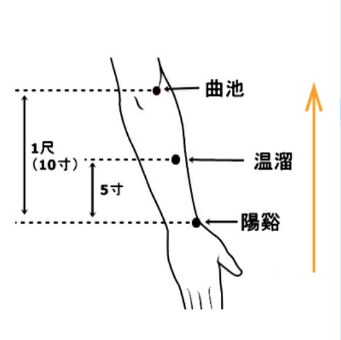

返回
刮痧处方
欢迎，昵称
当前成员： 小明


刮痧：尤其适宜于身体出现疼痛性疾病、骨关节退行性疾病以及亚健康、慢性疲劳综合征的情况使用。
建议您在左上肢的温溜穴以及左上肢外侧前缘（手阳明大肠经）使用刮痧板进行调理。
【取穴】侧腕屈肘，在阳溪与曲池的连线上，阳溪上5寸处即是温溜穴所在位置。
【操作】刮痧板刮拭穴位及其所在经络，方向向上。

若出现：
口臭、便秘——加天枢穴、大肠俞穴。
操作方法同上，顺经络循行方向刮拭。
【注意事项】
（1）凡体表有疖肿、破溃、疮痈、痣、斑疹部位、皮下不明原因包块、急性扭伤、创
伤或骨折部位、浮肿部位禁止刮痧。
（2）严重过敏者禁止刮痧。
（3）孕妇的腹部、腰骶部禁用刮痧。
（4）第一次刮痧出痧后，下次待痧斑消退后再刮，不宜每天都进行刮痧。